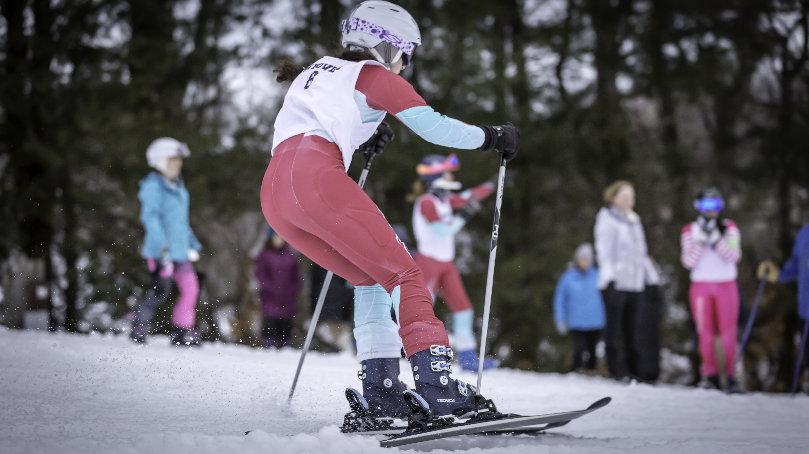
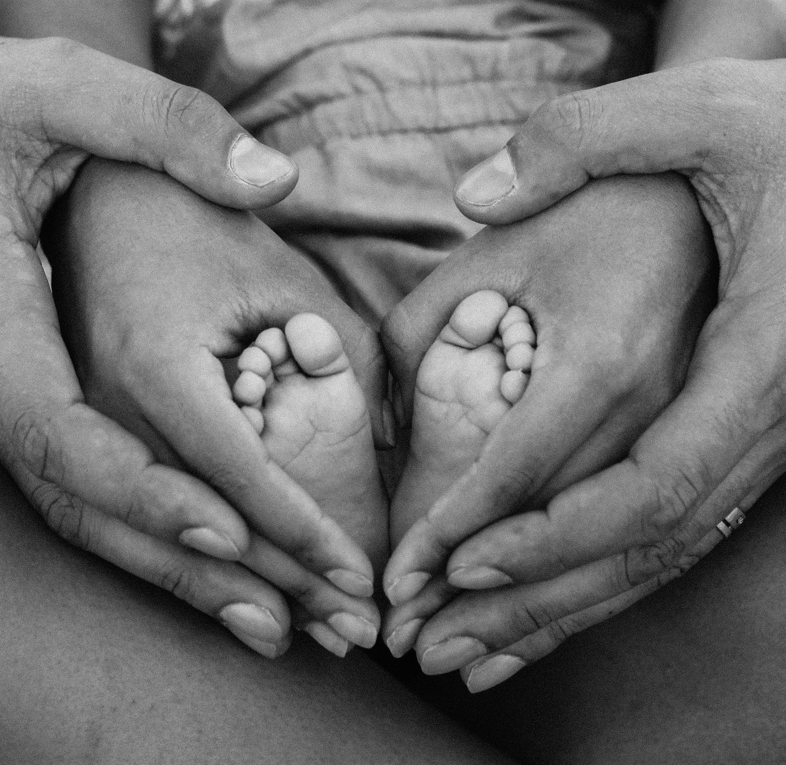

2019
I was born in ireland and I lived their till I was 8. My moms job was promoted and I moved to Georgia, north of Atlanta. I enjoyed my time in GA, I met so many knew people and had so many great experiences there. Halfway through 7th grade, we moved to Boston for my moms job, where I finished out middle school, and went to high school.


I volunteer at a local soup kitchen every week and I have over 100 volunteer hours from my freshman year. I have done lots of forms of community service too. At a time I volunteered at a nursing home, where I got to meet so many amazing people. I also went to a community service retreat, where I got to emerge myself in helping others and just give back to my community. One of the coolest things I got to do was stain a wooden deck at a barn that helps handicap children by using horses.

Sports and activities
I currently am a three season athlete and I love every sport that I do. In the fall I do cross country, where I will be a captain during my junior year, in the winter I ski, and in the spring I do track. I have been skiing since I was three and tt is one of my favorite times of year! I love every sport I do for different reasons, but they make me who I am today. I also participate in our schools boards and DECA. DECA is a lot of who I am, I joined my freshman year and have made states both this year and freshman year. I hope to make nationals my junior or senior year of highschool.

I have grown up traveling all over. I was born in Ireland, My parents are from Malta, and I have family all over Europe. Most of my family is still in Malta, but I have direct family in Australia, Russia, Sweden, and Italy. Growing up in such a culturally rich environment has shaped me into the person I am today. Traveling throughout my childhood has also given me some of my favorite memories, like learning to ski in Italy, celebrating birthdays in Malta, and exploring countries with my family, all while having the time of my life.

In the future I want to go to college and study some science or a business. I know after college I want to get my MBA. I hope to have a family, and I hope I can expose them to the culture that I was exposed to as a child. I want a dog and I hope to be close to my sister and parents so that I can see them often.